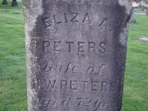
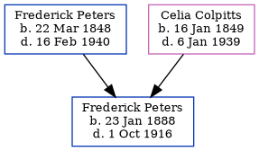

Elizabeth A Peters (née Cook) 1844 - 1896
[ Home ] | [ Calendar ] | [ Surnames Index ] | [ Census Index ] | [ Family History ]Elizabeth Cook, the wife of Henry Watson Peters (the second cousin three-times-removed on the father's side of Nigel Horne), was born in Sackville, New Brunswick, Canada in 18441,2,3,4,5had 4 children, Selina, James Bedford, Capt. Albert Goodrich and Harrison Fletcher.
During her life, she was living in Richibucto, Kent, New Brunswick, Canada in 18611 and in 18717; in Kent in 18812; and in New Westminster, British Columbia, Canada in 18913 which is where she died on Jul 14, 18964,5,6. She was buried there after Jul 14, 18965.
Children
- Selina was born in 1863
- James Bedford was born on Jul 7, 1864
- Capt. Albert Goodrich was born on Nov 4, 1865
- Harrison Fletcher was born on Aug 29, 1867
Citations
- 1861 Census of Canada Ancestry.com Operations Inc (Relation to Head of House: Daughter)
- 1881 Census of Canada Ancestry.com Operations Inc (Marital Status: Married)
- 1891 Census of Canada Ancestry.com Operations Inc (Marital Status: Married; Relation to Head of House: Wife)
- British Columbia, Canada, Death Index, 1872-1990 Ancestry.com Operations Inc
- Canada, Find A Grave Index, 1600s-Current Ancestry.com Operations, Inc.
- British Columbia, Canada, Death Index, 1872–1992 - Findmypast
- 1871 Census of Canada Ancestry.com Operations Inc
Media
Elizabeth Cook - gravestone

British Columbia, Canada, Death Index, 1872–1992 - US/MCV/126823/1038533156125370
Family Tree
Generated by ged2site. Last updated on Jun 11, 2024